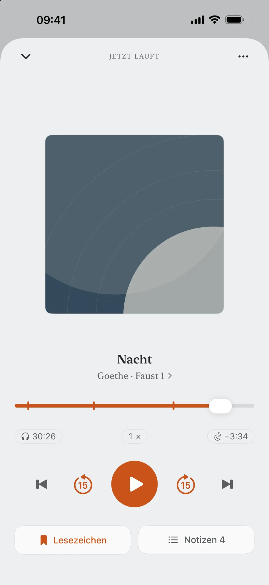
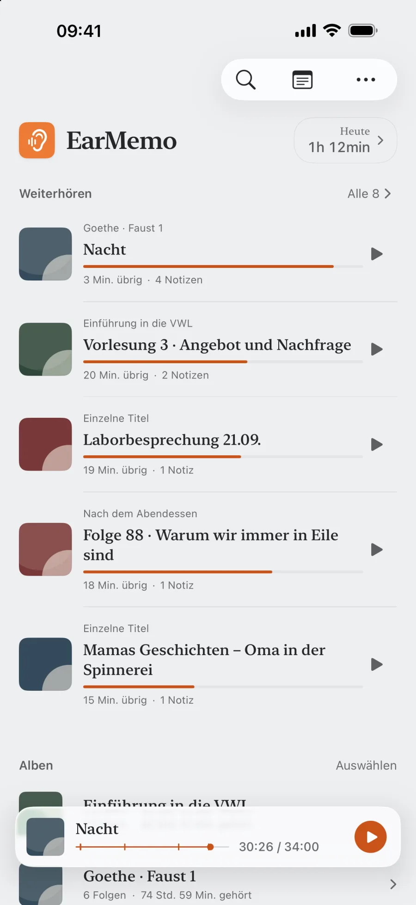
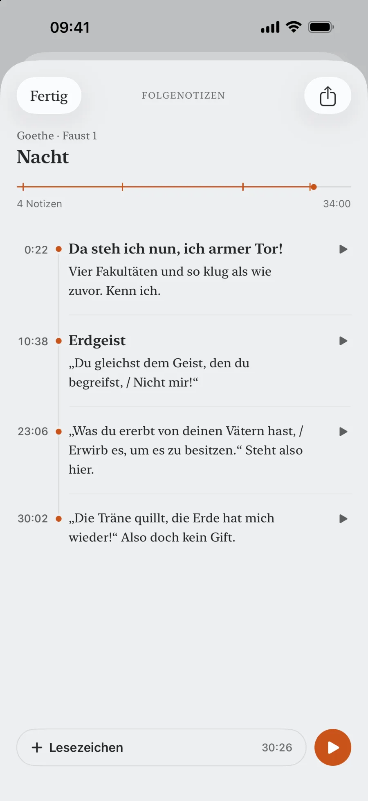
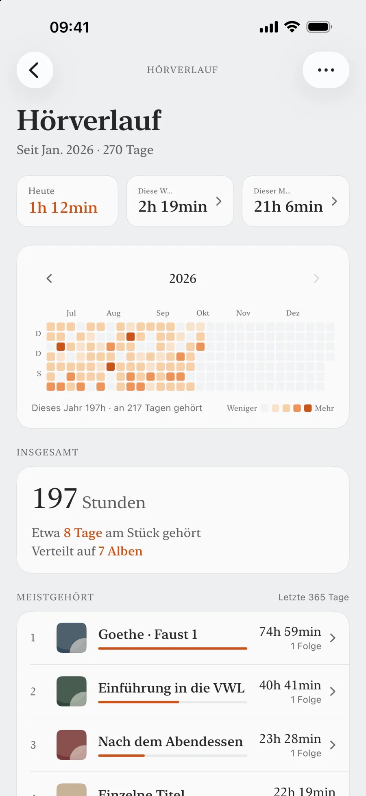
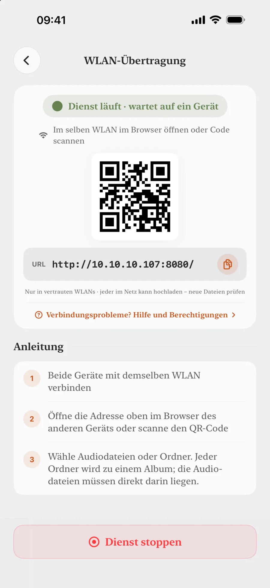

Hör, was dir gehört.
Höre eigene lange Aufnahmen auf dem iPhone, setze an der letzten Stelle fort und speichere Notizen mit Zeitstempeln. Ohne Konto oder Internet für die Wiedergabe.
Diese Seite bringt schon Notizen mit. Tippe auf einen Zeitstempel, um dorthin zu springen, genau wie bei einer Notiz in EarMemo.

Warum EarMemo
Andere Player kämpfen um deine Aufmerksamkeit.
EarMemo lässt dich in Ruhe hören.
Kein Empfehlungsfeed, kein automatischer Start der nächsten Folge, keine endlose Liste. EarMemo sammelt deine heruntergeladenen Hörbücher, Vorträge und langen Aufnahmen an einem Ort. Halte bei dem Satz an, den du behalten willst. Morgen hörst du genau dort weiter.
Deine Mediathek
Alles, was du gerade hörst, an einem Ort
Ein Bildschirm für alles, was du gerade hörst. Jede Aufnahme merkt sich Position und Restzeit. Tippen und weiterhören, ohne zu suchen oder zu rätseln, wo du warst.
- Sekundengenau an der letzten Stelle weiterhören
- Dateien in Alben ordnen und nach Wunsch sortieren
- Die heutige Hörzeit direkt oben sehen


Notizen
Notizen, die dich zurückbringen
Etwas gehört, das bleiben soll? Einmal tippen und weiterhören. Schreib jetzt oder später etwas dazu. Jede Notiz ist an einen Zeitstempel gebunden. Tippe darauf, um genau zu dieser Sekunde zurückzuspringen.
- Mit einem Tippen von der Notiz zur Audiostelle
- Nach Album und Folge geordnet, leicht wiederzufinden
- Notizen mit dem einmaligen Pro-Kauf als Markdown exportieren
Hörverlauf
Dein ganzes Hörjahr auf einen Blick
Heute, diese Woche, dieses Jahr: EarMemo zählt jede Minute mit langen Audioinhalten. Ohne Wettbewerb. Einfach damit aus „Ich höre doch ständig“ eine Zahl wird, die du sehen kannst.
- Ein ganzes Jahr als übersichtliche Heatmap
- Hörstunden pro Tag, Woche und Monat sowie insgesamt
- Alles bleibt auf dem Gerät, ohne Upload oder externe Analyse


Import
Deine Dateien schnell aufs Handy bringen
Öffne die angezeigte Adresse im Browser am Computer und ziehe Audiodateien über dein lokales WLAN direkt in EarMemo. Ohne Kabel oder Cloud. Oder importiere aus Nachrichten, Mail und Dateien über das iOS-Teilen-Menü.
- WLAN-Übertragung per Browser, ohne Kabel oder Cloud
- Import aus Nachrichten, Mail und Dateien über das Teilen-Menü
- mp3 · m4a · m4b · flac · aac · wav; mp4 / mov nur als Audio
Alles Weitere fürs Hören
Einschlaftimer
Live-Aktivität mit Countdown in der Dynamic Island und auf dem Sperrbildschirm.
Hintergrund & Sperrbildschirm
Vollständige Wiedergabesteuerung im Kontrollzentrum und auf dem Sperrbildschirm.
Variable Geschwindigkeit
Schneller oder langsamer hören, ohne die Tonhöhe zu verändern. (Auch diese Seite kann das: Probiere unten 2× aus.)
Lesezeichen
Mit einem Tippen zu jeder gespeicherten Stelle zurückspringen.
Import über das Teilen-Menü
Sende Dateien aus Nachrichten, Mail, Dateien oder jeder App mit Teilen-Funktion.
Viele unterstützte Formate
mp3 · m4a · m4b · flac · aac · wav sowie mp4 / mov / m4v als Audio. Auch M4B-Kapitel werden gelesen.
Datenschutz
Datenschutz durch den Aufbau der App
EarMemo hat keinen eigenen App-Server. Einstellungen, Wiedergabeposition, Notizen, Lesezeichen und Statistiken bleiben auf deinem Gerät und, falls aktiviert, in deinem eigenen iCloud-Backup. Die optionale WLAN-Übertragung bleibt im lokalen Netzwerk. Käufe wickelt Apple StoreKit ab.
- Keine Datenerfassung
- Keine Drittanbieter-SDKs
- Keine Werbung, kein Tracking
- Kein Konto, keine Anmeldung
Preise
Gratis laden. Alles mit einem einmaligen Kauf freischalten.
Lade EarMemo gratis und höre in deinem Tempo: jeweils ein Album und insgesamt zehn verschiedene Audiodateien, zusammengezählt aus Titeln in Alben und einzelnen Titeln. Die Anzahl der Wiedergaben ist nicht begrenzt. Setze unbegrenzt Zeitmarken und ergänze bei fünf davon eine Textnotiz. Alle Import- und Wiedergabefunktionen sind dabei. EarMemo Pro schaltet alles mit einem einmaligen Kauf frei: 8,99 € im deutschen App Store. Kein Abo, keine Werbung.
FAQ
Die Zeitstempel in den Antworten führen direkt zum passenden Abschnitt der Seite.
Was ist EarMemo?
EarMemo ist ein lokaler Audioplayer für iOS, gedacht für Podcasts, Hörbücher, Vorträge und Sprachaufnahmen. Einstellungen, Wiedergabeposition, Lesezeichen, Notizen und Hörstatistiken bleiben auf deinem Gerät. EarMemo hat keinen eigenen Server, lädt nichts zum Entwickler hoch und benötigt kein Konto.
Gehört EarMemo zu einer ähnlich benannten KI-Lern-App?
Nein. EarMemo ist ein Offline-Audioplayer für iPhone und iPad von Fan YANG, für deine eigenen Podcasts, Hörbücher, Vorträge und Aufnahmen. Er ist unabhängig von ähnlich benannten KI-Lern- oder Karteikartendiensten und hat keine KI-Funktionen, kein Konto und keinen App-Server.
Wie unterscheidet sich EarMemo von Apple Podcasts oder Spotify?
EarMemo spielt lokale Dateien, die dir bereits gehören: heruntergeladene Podcasts, Hörbücher, Vorträge und Sprachmemos. Es gibt keinen Streamingkatalog, kein Abo und kein Konto. Die App konzentriert sich auf lange Audioinhalte aus Dateien, die du selbst verwaltest.
Funktioniert EarMemo offline?
Ja. Wiedergabe, Statistiken und Notizen funktionieren ohne Internet, auch im Flugmodus. Die optionale Dateiübertragung per WLAN benötigt eingeschaltetes WLAN und ein lokales Netzwerk.
Zu 17:48 springen · DatenschutzWelche Audio- und Videoformate werden unterstützt?
EarMemo unterstützt mp3, m4a, m4b, aac, flac und wav. Videos in mp4, mov und m4v werden nur als Audio abgespielt. DRM-geschützte Käufe aus Apple Books oder Audible lassen sich nicht importieren.
Zu 13:40 springen · ImportErfasst EarMemo Daten?
Nein. EarMemo erfasst keine Nutzerdaten. Es gibt keine Drittanbieter-SDKs, keine Nutzungsanalyse, keine Werbung und kein Tracking. Alle Daten bleiben auf deinem Gerät und werden bei aktiviertem iCloud-Backup in deinem eigenen Backup gesichert.
Zu 17:48 springen · DatenschutzFunktioniert EarMemo auf dem iPad?
Ja. EarMemo läuft auf iPhone und iPad. Auf dem iPad nutzt es eine an den größeren Bildschirm angepasste geteilte Ansicht.
Kann ich Dateien aus anderen Apps importieren?
Ja. Über das iOS-Teilen-Menü kannst du Audio- und Videodateien aus Nachrichten, Mail, Dateien und anderen Apps mit einer Teilen-Funktion für Mediendateien an EarMemo senden.
Zu 13:40 springen · ImportIst die Gratisversion zeitlich begrenzt?
Das Gratis-Kontingent läuft nie ab: jeweils ein Album und insgesamt zehn verschiedene Audiodateien, zusammengezählt aus Titeln in Alben und einzelnen Titeln. Die Anzahl der Wiedergaben ist nicht begrenzt. Du kannst unbegrenzt Zeitmarken setzen und fünf davon mit Text versehen. Alle Import- und Wiedergabefunktionen bleiben verfügbar. Inhalte über dem Kontingent bleiben sichtbar und löschbar; ein einmaliger Pro-Kauf entsperrt ihre Wiedergabe.
Zu 20:30 springen · PreiseIch habe EarMemo früher als kostenpflichtige App gekauft. Muss ich erneut zahlen?
Nein. Aktualisiere auf die neueste Version. EarMemo Pro wird automatisch freigeschaltet, ohne weitere Schritte oder zweite Zahlung.
Deine Mediathek. Ein Player, der sich aufs Hören konzentriert.
Weitere Folgen in diesem Album
- Ep. 1Gehörtes aus Hörbüchern behaltenMarkieren, weiterhören, später eigene Worte ergänzen, ohne aus einem Buch Hausaufgaben zu machen.
- Ep. 2Eigene M4B- und MP3-Hörbücher abspielenWelche Dateien funktionieren, vier Importwege und wann ein anderer Player besser passt.
- Ep. 3Notizen mit Zeitstempeln als Markdown exportierenMit Notizen direkt zur passenden Audiostelle zurückspringen. So unterscheidet sich EarMemo von Transkriptions-Apps.
- Ep. 4Audio ohne iTunes aufs iPhone übertragenWLAN, Dateien-App und Teilen-Menü: Welcher Weg passt wann?
- Ep. 5Kein Konto, kein App-Server, kein TrackingWas lokal hier bedeutet und wie du es selbst prüfen kannst.